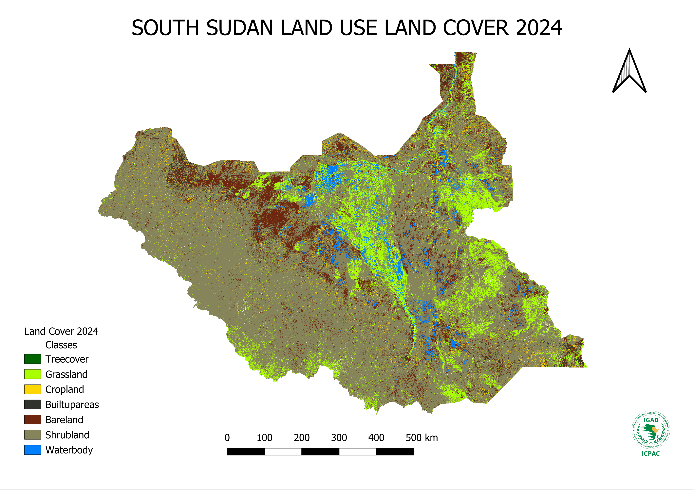

Geospatial analysis and Earth observation work spanning land cover mapping, early warning systems, and climate adaptation across East Africa.
South Sudan faces recurring droughts and floods affecting millions of people. As part of the SUSTAIN project under ICPAC and GMES & Africa, I contributed to building a multi-temporal land cover dataset covering the entire country — with focused analysis on Terekeka and Kapoeta — to feed into hazard, vulnerability, and risk maps for humanitarian planning and early warning.

South Sudan LULC 2024 — seven land cover classes derived from Sentinel-2 and Landsat imagery using supervised ML classification in Google Earth Engine. The blue corridor through the centre is the Sudd wetland, the largest in Africa.
What I did: Image selection and mosaicking across four time periods (1991, 2001, 2021, 2024) using Landsat TM/ETM+/OLI and Sentinel-2. I generated vegetation seasonality profiles to guide cloud-free image acquisition, ran supervised classification using CART, Random Forest, and SVM classifiers in GEE, applied NDVI and NDWI spectral indices to improve class separability, and conducted accuracy assessment using a confusion matrix validated against PlanetScope reference data.
Output: Seven land cover classes — treecover, grassland, cropland, shrubland, bareland, built-up areas, and waterbody — feeding into ICPAC's impact-based forecasting and emergency response products for South Sudan.
Additional GIS and remote sensing work will be added here, including regional resilience monitoring and carbon MRV projects.